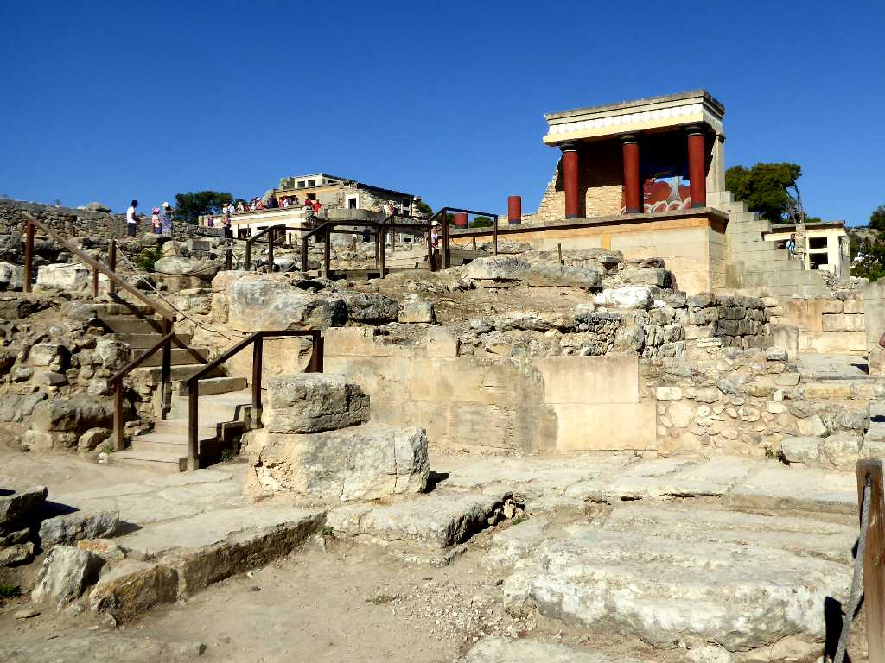
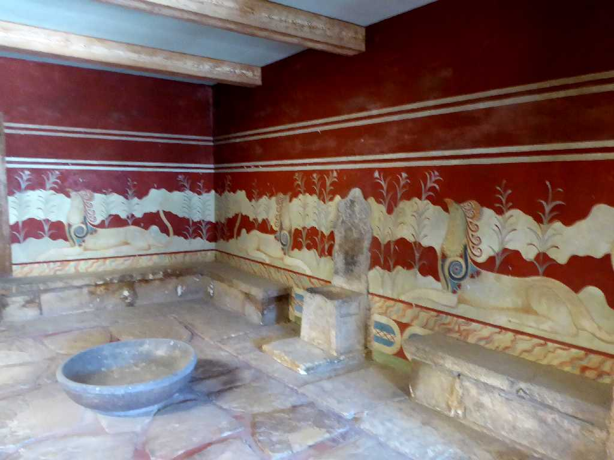
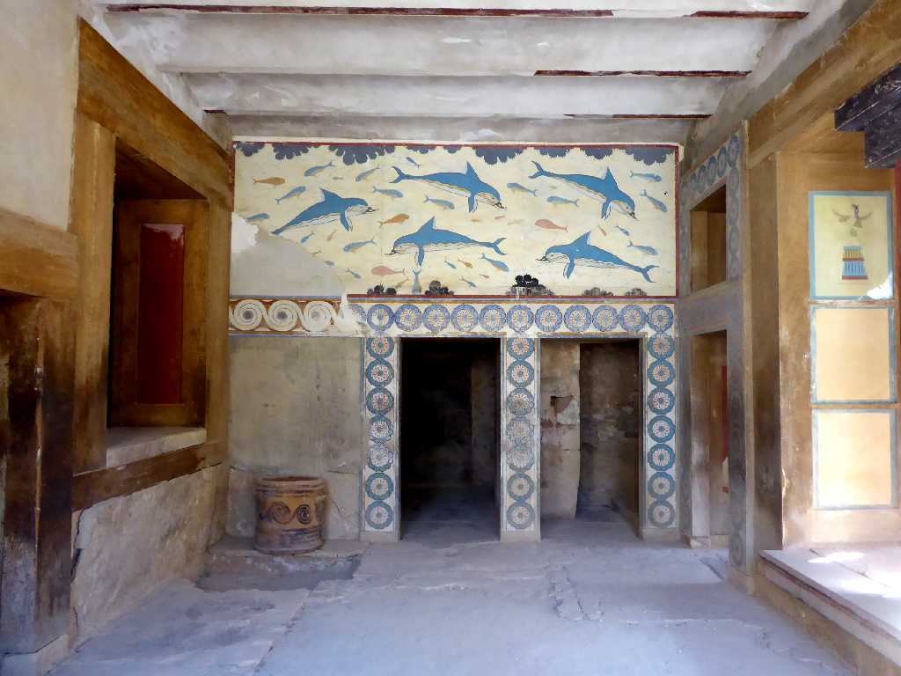
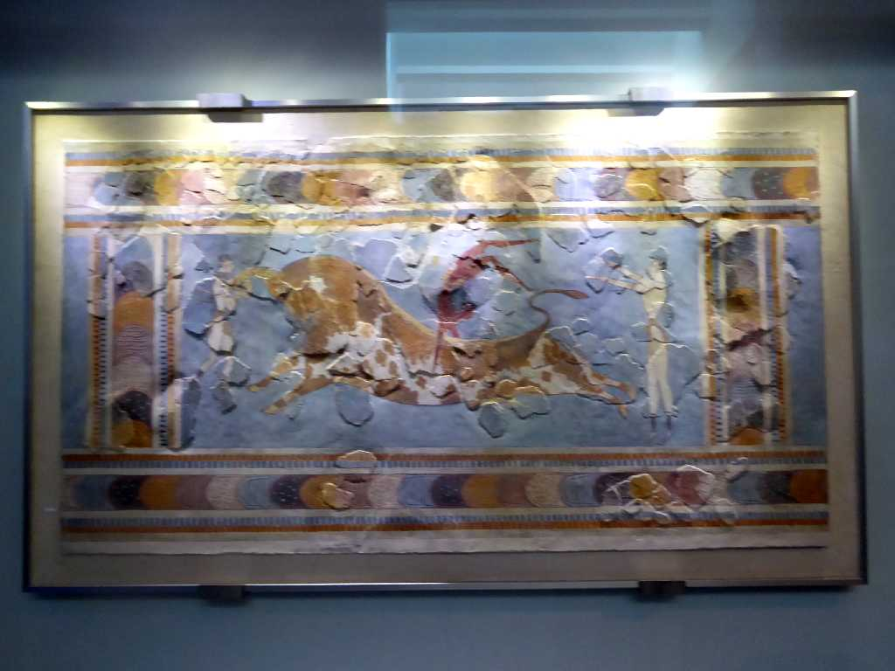
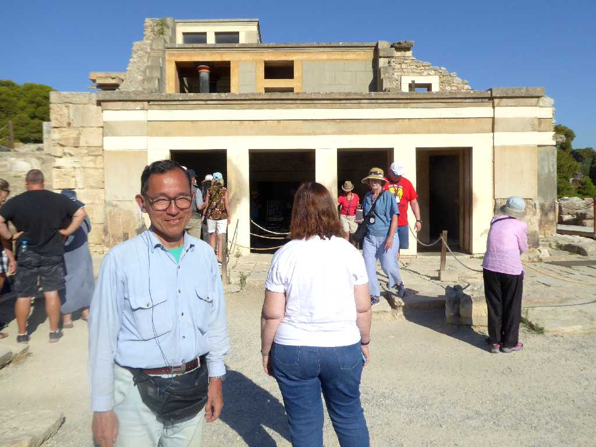

Knossos Crete
クレタ島には紀元前７０００年頃から人が住み始めクノッソス宮殿は紀元前２０００年頃創られ始めたと考えられている

Chamber of King Knossos
王座の間

Palace Knossos

BC1550-1450 The Toreador Fresco Knossos Crete
紀元前１５５０年－１４５０年 闘牛士のフレスコ画 ミノア文明

June 23 2018 Knossos Crete